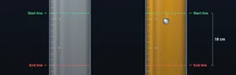
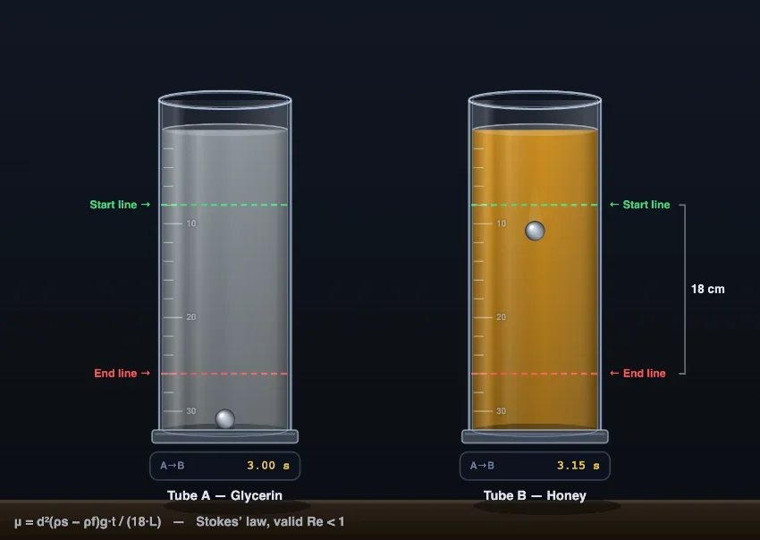

Viscosity Experiment Virtual Lab
Stokes’ Falling-Ball Viscometer • Race Fluids on an Incline • τ = μ (du/dy) • Simulate • Explore • Practice • Quiz
Display Controls
Σ Live equations — values substituted from current state
⚖ Fluid comparison — viscosity table at current temperature
💡 What-if coach — insights from current values
1 Overview
This virtual lab recreates the two classic school and college viscosity experiments. In the default Falling Ball experiment, a sphere is dropped from the top of a fluid-filled cylinder and timed between the marked Start and End lines — Stokes’ law then turns that fall time into a viscosity measurement, exactly as in a real laboratory. In the Incline Race, equal blobs of up to four fluids are released together at the top of an inclined glass plate and lane stopwatches time each one to the finish line — honey creeps while water sprints.
Eight academically referenced fluids are included — water, whole milk, olive oil, SAE 30 engine oil, glycerin, corn syrup, honey and ketchup — with dynamic viscosity, density and temperature behaviour based on standard reference values at 20 °C. Four modes (Simulate, Explore, Practice, Quiz) take you from watching flow to solving Newton’s-law-of-viscosity problems.
2 Falling Ball Viscometer (Default Experiment)

Choose the fluid in each of the two cylinders, the ball material (steel, glass or aluminium) and its diameter, then press ▶ Drop Ball. The sphere is dropped from the top of the tube, settles to terminal velocity, and is timed between the marked Start line and End line (18 cm apart).
Reading the measurement: each tube carries its own stopwatch that runs from the start line to the end line, so you get the fall time t without hand-timing anything. The results table then applies μ = d²(ρs − ρf)g t / (18L) and shows the recovered viscosity beside the true value — the two agree whenever the Reynolds-number check passes. Stopwatches always report real experiment seconds, so the reading stays honest at any playback speed.
The lab integrates the full equation of motion (weight − buoyancy − drag) and reports the Reynolds number: if Re > 1 a red warning appears because Stokes’ law is no longer valid — exactly why real falling-ball viscometers are used only for viscous liquids like glycerin and honey, never for water.
3 Incline Race Experiment
Switch the Experiment pill to 🏁 Incline Race. Pick a fluid for each of the four lanes (choose “— empty lane —” to race fewer). Set the plate angle (10–60°), run length (20–100 cm), film thickness (0.5–3 mm) and temperature (5–60 °C), then press ▶ Start Race.
The physics uses the laminar gravity-film model: mean flow speed v = ρgh²sinθ / 3μ, so the time to the finish line is t = 3μL / (ρgh²sinθ). Because real times range from a fraction of a second (water) to over half an hour (honey), the animation runs in time-lapse — the stopwatch shows true physical time while the Speed pills (×1 to ×100, or Auto) control playback. Skip to Result jumps straight to the photo-finish table.
Notice that the finishing order follows kinematic viscosity ν = μ/ρ, not dynamic viscosity alone — a denser fluid gets more gravitational push per unit of drag.
4 Explore Mode — The Theory
Explore mode has concept cards in four categories: Basics (what viscosity is, dynamic vs kinematic, units Pa·s / poise / cP), Newton’s Law & Formulas (τ = μ du/dy, the film-flow equation, Stokes’ law), Measuring Viscosity (capillary, rotational, falling-ball and cup viscometers), and Non-Newtonian & Applications (shear-thinning ketchup, shear-thickening cornstarch, engine-oil grades, lubrication).
Every card carries a worked numerical example with real fluid data, so you can check your own calculation line by line.
5 Practice & Quiz
Practice generates random numeric problems — shear stress from Newton’s law, drag force on a plate, Pa·s ↔ cP conversions, kinematic viscosity, Stokes terminal velocity and falling-ball viscometry. Type your answer (within 2%) and press Check, or open Show Solution for the full working.
Quiz asks 5 questions per round, mixing multiple-choice concept questions with numeric problems, and finishes with a star rating and per-question breakdown.
6 Key Formulas & Units
- Newton’s law of viscosity: τ = μ (du/dy) — shear stress (Pa) = dynamic viscosity (Pa·s) × velocity gradient (s−1).
- Units: 1 Pa·s = 10 poise = 1000 cP. Water at 20 °C is almost exactly 1 cP (1.002 mPa·s).
- Kinematic viscosity: ν = μ/ρ, in m²/s (1 mm²/s = 1 cSt).
- Film flow down an incline: t = 3μL / (ρgh²sinθ) for a laminar film of thickness h.
- Stokes’ law: Fd = 3πμdv; terminal velocity vt = d²(ρs−ρf)g / 18μ, valid for Re < 1.
- Temperature: liquid viscosity falls as temperature rises (honey ~5× thinner from 20→40 °C); gas viscosity rises.
7 Power Tools
Canvas toggles hide or show the stopwatches, labels, equation overlay and grid. Show Calculations opens a step-by-step modal with every substitution for the current setup. The Live equations panel renders the working in real mathematical notation and updates as you drag sliders; Fluid comparison tabulates all eight fluids at the current temperature; the What-if coach comments on your setup.
Export: CSV downloads the results table; PNG saves a watermarked snapshot. Right-click the canvas for the same actions plus Copy Result. Sound: a click on start, a tick as each lane finishes, and success/error chimes in Practice and Quiz.
8 Tips & Best Practices
- Race water against milk to see how little difference 2× viscosity makes; race water against honey to see 4 orders of magnitude.
- Slide temperature from 5 to 60 °C during setup and watch honey’s predicted time collapse — this is why honey is easier to pour warm.
- Ketchup is non-Newtonian: its lane uses an apparent viscosity and is flagged, because a single μ value only approximates it.
- In the falling-ball experiment, doubling the ball diameter quadruples the terminal velocity (vt ∝ d²).
- Continue with the Reynolds Number and Fluid Flow in Pipes simulators, where viscosity decides laminar vs turbulent flow.
The Viscosity Experiment: Comparing How Liquids Flow

Viscosity is a fluid’s resistance to flow — the internal friction between layers of fluid sliding past one another. It is defined by Newton’s law of viscosity, τ = μ (du/dy): shear stress equals dynamic viscosity times the velocity gradient. The standard laboratory way to measure it is the falling sphere (Stokes’) experiment: drop a small ball into the liquid, time it between two marked lines with a stopwatch, and apply Stokes’ law. At 20 °C water has μ ≈ 1 mPa·s while honey is near 10,000 mPa·s, which is why honey takes thousands of times longer to flow down the same inclined plate.
How Do You Determine the Coefficient of Viscosity by Stokes’ Method?
The falling-sphere procedure — the default experiment in this virtual lab — mirrors the classic school and university practical:
- Fill a tall measuring cylinder with the liquid and mark a start line a few centimetres below the surface and an end line a measured distance L further down.
- Drop the sphere from the top. It accelerates briefly until drag plus buoyancy balance its weight — the start line sits below the surface precisely so that the ball crosses it already at terminal velocity.
- Start the stopwatch as the ball passes the start line and stop it at the end line; record the time t. Repeat and average.
- Compute the coefficient of viscosity: μ = d²(ρs − ρf) g t / (18 L).
Worked example: a 2 mm steel ball (ρs = 7850 kg/m³) takes 17.9 s to fall the 18 cm between the lines in glycerin (ρf = 1261 kg/m³). Then μ = (0.002)² × 6589 × 9.81 × 17.9 / (18 × 0.18) ≈ 1.43 Pa·s — within 2% of glycerin’s published 1.41 Pa·s. The virtual lab runs exactly this measurement: press Drop Ball, read the fall time off the tube’s stopwatch, and compare the viscosity recovered from it against the published value.
Viscosity of Common Liquids at 20 °C
| Fluid | μ (mPa·s = cP) | ρ (kg/m³) | ν = μ/ρ (mm²/s) |
|---|---|---|---|
| Water | 1.0 | 998 | 1.0 |
| Whole milk | ≈ 2.1 | 1030 | 2.0 |
| Olive oil | ≈ 84 | 911 | 92 |
| Engine oil (SAE 30) | ≈ 290 | 888 | 327 |
| Glycerin | 1412 | 1261 | 1120 |
| Corn syrup | ≈ 2500 | 1380 | 1812 |
| Honey | ≈ 10 000 | 1420 | 7042 |
| Ketchup (apparent) | ≈ 50 000* | 1140 | — |
*Ketchup is a shear-thinning non-Newtonian fluid; its apparent viscosity depends strongly on how fast it is sheared, which is why shaking the bottle makes it pour.
How the Inclined-Plate Race Works
Releasing equal blobs of different liquids at the top of a tilted glass plate is the classic classroom viscosity comparison. For a thin laminar film of thickness h flowing under gravity, the mean speed is v = ρgh²sinθ/3μ, so the time to travel a length L is t = 3μL/(ρgh²sinθ). Two things fall out of this equation. First, the finishing order is set by the kinematic viscosity ν = μ/ρ — the drag-to-driving-force ratio. Second, the spread of results is enormous: with a 1 mm film on a 50 cm plate at 30°, water arrives in about 0.3 s while honey needs over half an hour. The virtual lab runs the race in time-lapse so both extremes fit on one screen with honest physical times on the stopwatches.
What Is the Difference Between Dynamic and Kinematic Viscosity?
Dynamic viscosity μ (Pa·s, or the smaller units poise and centipoise) measures the shear stress needed to sustain a velocity gradient — it appears directly in Newton’s law of viscosity. Kinematic viscosity ν = μ/ρ (m²/s, or centistokes) measures how quickly momentum diffuses through the fluid and governs gravity-driven flow, which is why the incline race ranks fluids by ν. Mercury is a striking example: its dynamic viscosity (1.55 mPa·s) is higher than water’s, but because it is 13.5 times denser its kinematic viscosity is 8 times lower — mercury would beat water down the plate.
When Is Stokes’ Law Valid — and What Are the Sources of Error?
Stokes’ drag law Fd = 3πμdv holds only for creeping flow, Re < 1. In water a 4 mm steel ball reaches a Reynolds number in the thousands, so Stokes’ law fails badly and the simulator flags the measurement in red — this is exactly why laboratory falling-ball viscometers (Höppler type, ISO 12058-1) are specified for oils, glycerin and syrups, never water. Other classic error sources the lab lets you explore: timing before the ball reaches terminal velocity (start line too close to the surface), human reaction time when hand-timing a real fall, wall effects in a narrow tube, and temperature drift — a 1 °C rise changes glycerin’s viscosity by about 8%.
Why Does Viscosity Decrease When a Liquid Is Heated?
In liquids, viscosity comes from intermolecular cohesion. Heating gives molecules more thermal energy to escape their neighbours, so viscosity falls roughly exponentially with temperature — honey is around five times thinner at 40 °C than at 20 °C, and engine oil must be formulated (multigrade SAE ratings like 10W-30) so it stays pumpable cold yet protective hot. Gases behave the opposite way: their viscosity comes from molecular momentum exchange, which increases with temperature. The lab’s temperature slider (5–60 °C) uses an exponential fit anchored to published reference values so you can watch the race order gap widen and shrink.
Who Uses This Simulator?
School physics and chemistry students meeting viscosity for the first time, technical and vocational trainees in fluid mechanics and lubrication courses, undergraduate engineers preparing for laboratory sessions with Höppler viscometers, and instructors who want a projector-friendly demonstration where honey doesn’t actually have to be cleaned off the bench afterwards.
References
- Cengel, Y. A. & Cimbala, J. M. — Fluid Mechanics: Fundamentals and Applications, 4th ed., Chapter 2 (Properties of Fluids) — fluid property data and Newton’s law of viscosity.
- White, F. M. — Viscous Fluid Flow, 3rd ed. — laminar film flow on an inclined plane.
- ISO 12058-1 — falling-ball viscometer method for the determination of viscosity.
Explore Related Simulators
If you found this viscosity experiment helpful, explore our Reynolds Number Simulator, Fluid Flow in Pipes, Bernoulli’s Principle, Buoyancy & Archimedes’ Principle, and Pascal’s Law Simulator for more hands-on fluid mechanics practice.